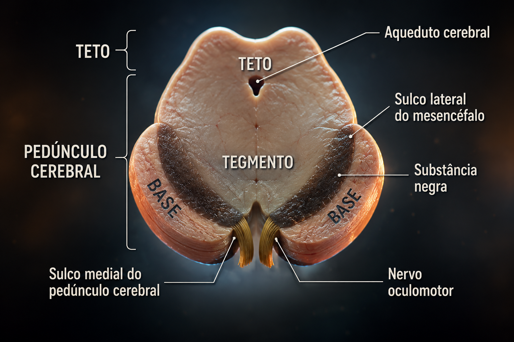

Teste dos jogos dos colegas: depois de jogar, abra o instrumento científico para avaliar usabilidade, acessibilidade, aprendizagem e adequação ao público 60+. Abrir teste científico dos colegas
PAINEL DE SONS
Testar os sons colocados no aplicativo
Os arquivos devem estar dentro de assets/audio com estes nomes exatos.
Nenhum som está tocando.
PASSO 1 DE 8
Abertura da Semana 6
Conheça a missão e confirme qual jogo o grupo deverá finalizar.
Neuro diz: nesta semana o grupo deverá concluir o jogo, inserir acessibilidade, sons e Libras.

PASSO 2 DE 8
Organizar as pastas do jogo
Crie a estrutura diretamente no GitHub ou peça ao ChatGPT ou Gemini para preparar os arquivos.
Atenção aos direitos autorais: não baixe músicas aleatórias do YouTube. Guarde o nome do autor, o endereço da página e a licença do áudio. Prefira arquivos CC0 ou aqueles cuja licença permita uso no projeto.
Envie o arquivo ZIP do jogo e os arquivos MP3. Depois, copie o prompt abaixo:
PASSO 7 DE 8
Adicionar acessibilidade e Libras
Todos os jogos deverão possuir recursos para pessoas 60+ e pessoas surdas.
Visual
A+, A−, alto contraste, modo escuro, botões grandes.
Auditiva
Instruções escritas, legenda e feedback visual.
Libras
Botão de Libras, vídeo sinalizado e VLibras.
Motora
Navegação por teclado, toque amplo e sem tempo obrigatório.
acessibilidade.pnglibras.pngpublico60.png
PASSO 8 DE 8
Testar o jogo completo
RELATÓRIO DO DIA
Registro da produção do jogo
Preencha manualmente ou use o Robô Neuro para criar um texto inicial que poderá ser revisado.
NEURO GAMES STUDIO 60+
Relatório de atividades - Semana 6
Criação e finalização de jogo educativo em formato PWA
1. Introdução
2. Metodologia
3. Resultados
4. Dificuldades e soluções
5. Considerações finais
6. Índice de imagens do game
As imagens são ajustadas integralmente no PDF, sem recorte.
Nenhuma imagem adicionada ao relatório.
Como salvar: ao tocar em “Gerar PDF”, escolha Salvar como PDF na tela de impressão do celular ou computador. O layout foi configurado para evitar cortes de textos e imagens.
MISSÃO CONCLUÍDA
Jogo pronto para a Semana 7
Agora o grupo poderá corrigir detalhes e preparar a apresentação ao público 60+.